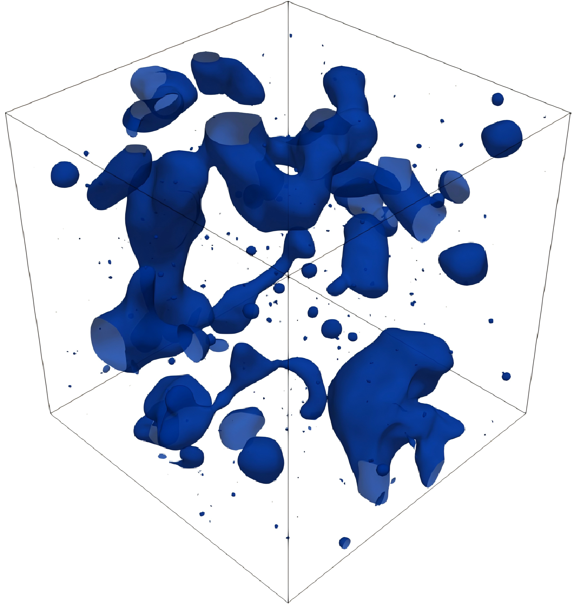

Droplet breakup in HIT
Direct numerical simulation data of a liquid droplet breaking up in forced homogeneous isotropic turbulence at Weber number 15

Description
Direct numerical simulation data of a liquid droplet breaking up in forced homogeneous isotropic turbulence at Weber number 15. The dataset provides volume-fraction, pressure, and velocity fields over 81 snapshots.